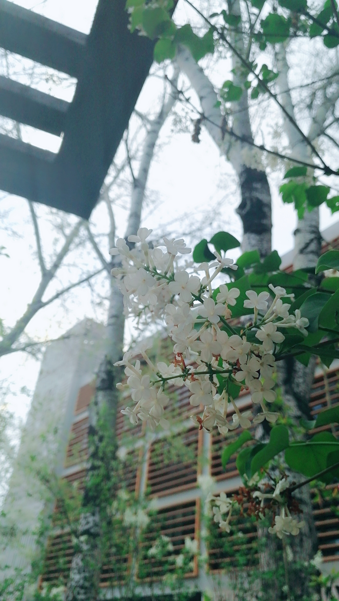

<h1><center>丁香</center></h1>
<p><center>

    </center></p>
    
<p><center>
著名的庭园花木。花序硕大、开花繁茂，花色淡雅、芳香。花色紫、淡紫或蓝紫，也有白色紫红及蓝紫色，以白色和紫色为居多。紫的是紫丁香，白的是白丁香。</center></p>
   <center><p>丁香花瓣一般为四瓣，据说找到五瓣的丁香花就能找到幸福。北外图书馆前此刻白色丁香花开得正盛，感兴趣的小伙伴们可以去找找五瓣的丁香花。
    </center></p>
    <body bgcolor="#DDA0DD">